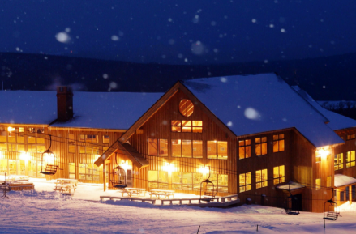

As the winter draws closer, the progress at the mountain continues on schedule with the towers for the new high-speed quad having been installed, the work road being built, new snowmaking additions are coming and the lodge expansion is on track. With these investments and ticket pricing aimed at making the Saddleback experience as accessible as possible, Saddleback is building for the future, while holding fast to the commitment to the same friendly, laid back culture, unique terrain and welcoming experience. Without you, we’re just another mountain and the truth is, we’re not just another mountain.
#thisismyMaine #thisismyMountain
Saddle up with a
Season’s Pass
Full Season Passes
Adult (30-64)
$699
Senior (65-79)
$499
Casablanca (19-29)
$599
Junior (6-18)
$449
College (with ID)
$449
Super Seniors (80+)
$30
Children (5 and Under)
$30
The Laker Pass (for Rangeley Lakes Regional School students)
$329
Pass purchaser age determined by age as of November 1st.
Includes 2 free days at Jay Peak Resort.
Pay by Check
You can purchase your season pass by check, which is a great way to save us tons of credit card fees. Click the button below to email us for all the details.
In response to questions some of you have asked, we would like to post our simple assurance plan for all of our pass holders. This assurance guarantee applies specifically to the risks associated with COVID-19. Operating dates limited by weather will not be guaranteed.
If, due to COVID-19, the resort opening is delayed beyond January 1st, all passholders will receive a pro-rated credit for the time lost, to be automatically applied to their ’21 – ’22 season pass purchase.
If, due to COVID-19, the resort closes before March 21st, all pass holders will receive a pro-rated credit to be automatically applied to the ’21 – ’22 season pass purchase.
Based on what we know now, we do not believe COVID-19 will prevent the resort from opening this winter. In the event things change and we are not able to open at all this winter due to the pandemic, passholders will receive a 100% credit to be automatically applied to the ’21 – ’22 season.
Latest Updates
Everything we're doing at Saddleback will build on the legacy of this amazing ski area and the community surrounding it. We want this mountain to be here for generations to come.
Below are a handful of the changes you’ll see this coming season.
Lift Upgrades
The new Rangeley Detachable Quad more than triples uphill capacity over its predecessor and reduces ride time for the lift from 11 minutes to 4. That means a lot more skiing and a lot less riding lifts. The new Rangeley also serves all levels of terrain.
Expect further lift upgrades in seasons to come!
Snowmaking
At Saddleback, we're fortunate to have the highest natural snowfall of all the major Maine ski resorts. To improve on Mother Nature’s generosity, we’re making significant investments in our system and will continue to make additional investments for years to come.

Lodge Renovation
You'll find significant renovations to the base lodge, resulting in a more comfortable, aesthetically pleasing, and energy efficient space for booting up, grabbing lunch, or just relaxing with friends. We’re also updating the pub menu, with an emphasis on local ingredient sourcing to support area producers and provide the tastiest, highest quality food possible. You can also expect to see Saddleback-branded microbrews produced right here in Maine!
Fair Ticket Pricing
We believe that everyone in our community should have the opportunity to experience Saddleback. That’s why we’re implementing fair ticket pricing, with a goal of keeping skiing accessible to all. We think you’ll find that Saddleback offers some of the most affordable alpine skiing anywhere, without compromising on quality or service.
Press Release
August 2020
Saddleback Mountain in Rangeley, Maine, has hired Anne Rockwell to be Outdoor Program Manager for the resort and Ali Spaulding, as the Ski School Manager, reporting to Anne.
Anne is originally from Greenville, Maine, was an Alfond Scholar at Carrabassett Valley Academy, and raced division I at Bates College. Upon graduation she coached the alpine racing program at Gould Academy for 5 years. She is also an experienced mountain bike instructor, whitewater raft guide and has been a lead instructor at the highly regarded L.L.Bean Outdoor Discovery School in Newry, Maine. Anne’s broad set of outdoor program experience is well aligned with the direction of Saddleback Mountain to be a year-round destination for people who want to have fun learning how to enjoy the outdoors in Maine. And let’s not forget her experience as a barista, because who doesn’t want a great cup of coffee when you’re on an adventure.
Anne has her degrees in Environmental Studies and Human Culture, as well as Level 200 USSA alpine race coach certification, Level 1 Mountain Bike instructor certification, AIARE 1 Avalanche Training Course, Maine Level 2 whitewater raft guide, Wilderness first Aid and CPR.
Ali also grew up outdoors and her passion for skiing started at a very young age. Shortly after learning to stand, she was on the slopes with her family and a lifelong devotion to the sport formed. Her early years skiing at Sugarloaf and Wildcat laid the foundation for a full-time career in making those same experiences accessible to others. She has dedicated herself to teaching skiing and has honed those skills over her 13 years as a PSIA instructor, and as an important part of the Ski School at Sugarloaf the past 6 years, where she was co-lead of the Sugarloaf Seasonal Program and a member of the Sugarloaf Training Staff.
Ali holds degrees in early childhood education, human development and psychology, and utilizes skills learned in those fields to provide the best experience for both guests and team members. Ali currently holds certifications as a PSIA Alpine Level 3, Telemark Level 1, Children's Specialist 2, and is also on the Eastern Division Development Team for Alpine. When people talk about Ali, beside how great she is at helping people become better skiers, they talk about a big smile and an enthusiasm that never seems to disappear. We’re excited to have that be a regular part of the experience for our Saddleback guests.
“Both these women are skilled, tenacious, smart, driven, positive and respected in the industry,” said Andy Shepard, General Manager at Saddleback. “I think Anne and Ali are a perfect complement to one another and will quickly provide thought-leadership in programming. I can’t wait to have them on board and getting to work.”
About Saddleback Mountain
Located in the beautiful High Peaks and Lakes district of western Maine, Saddleback Mountain was founded in 1960 and has grown its reputation for exceptional snow, some of the best skiing terrain in the East and a friendly, laid- back culture. At 4,120 feet of elevation and 2,000 feet of vertical, Saddleback is Maine’s third biggest mountain, and its base elevation of 2,100 feet is Maine’s highest. Just below the mountain is the iconic village of Rangeley, which is the gateway to Rangeley Lake, Mooselookmeguntic and Richardson Lakes.
Privacy Statement
Your privacy is important to us. Please read below to learn how we at Saddleback collect, use, and secure your personal information. Our goal is to provide you with the best booking experience possible and we are committed to protecting your privacy and creating a safe and secure online environment for anyone who visits and purchases on our website, located at www.saddlebackmaine.com (a "Site"). Finally, it describes your choices regarding the use, access and correction of your personal information. By using the Site, you agree to the terms of this Privacy Statement and you expressly consent to the collection, use and disclosure of your Personal Data as described herein.
Information Saddleback Collects From You
We collect information from you, including information that directly or indirectly identifies you ("Personal Data"), to provide you with better services. In some cases, the information we request may be Personal Data in order to fulfill an order and enable you use certain services on this Site. For example:
• When you place an order for tickets, rentals, lessons or other products, we request certain Personal Data from you on our order form. You must provide contact information such as first and last name, email address, phone number and billing address, and financial information such as credit card number, expiration date and security code. We use this information for billing purposes and to complete the transaction. If we have trouble processing an order, we will use this information to contact you.
Purchase Conditions
• All purchases are final and cannot be cancelled, refunded or transferred to another person unless otherwise specified.
• All tickets and passes are subject to restrictions described in the product description and/or pickup instructions.
• Your credit card will be charged for the amount shown, regardless of whether or not the purchased ticket(s) is/are used.
• We do not guarantee snow conditions, weather conditions, open terrain or number of lifts operating.